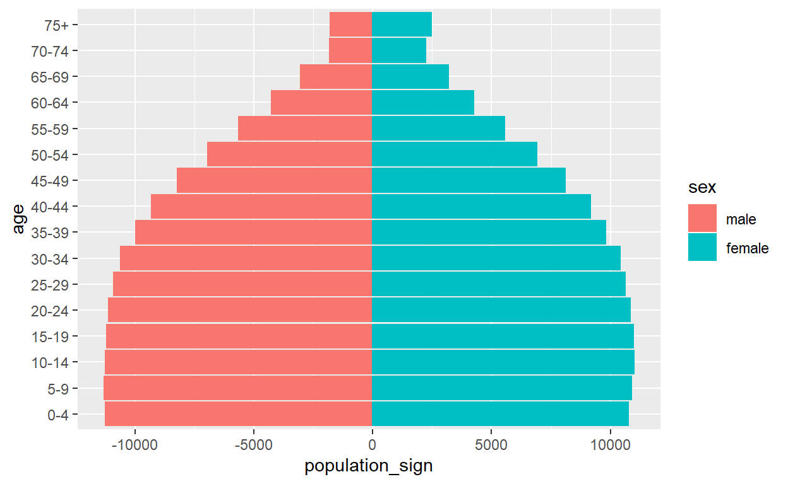
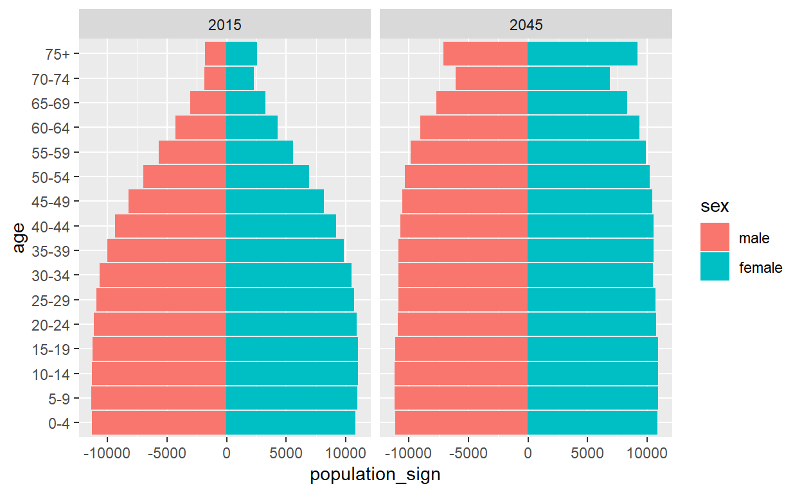
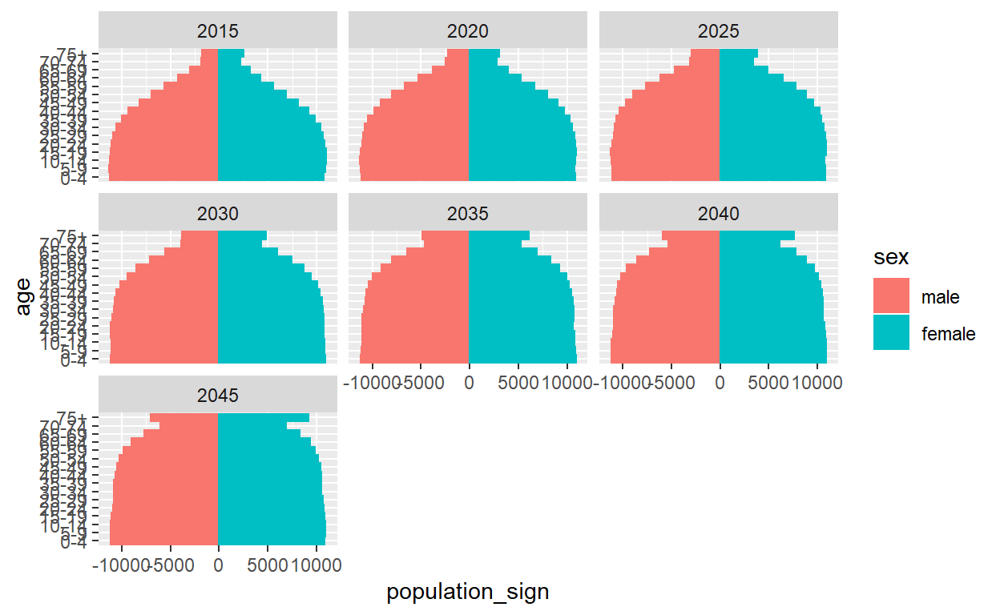

In this post i present a simple analysis of population structure using 3 main packages: dplyr, ggplot2, plotly. This post will demonstrate how to make a pyramid plot, calculating dependency ratio, and analyze similarity structure year to year. Case study in this post is Indonesia, using Population Projection Data based 2015 Intercensal survey by Statistics Indonesia (Badan Pusat Statistik).
#calling packages
library(dplyr)
library(ggplot2)
library(plotly)
#read data
id_pop <- read.table("id_pop_proj.csv", as.is = TRUE, header = TRUE)
id_pop <- as.tbl(id_pop)
id_pop
# A tibble: 992 x 4
year sex age population
<int> <chr> <chr> <dbl>
1 2015 male 0-4 11242.
2 2015 male 5-9 11303.
3 2015 male 10-14 11242.
4 2015 male 15-19 11188.
5 2015 male 20-24 11101.
6 2015 male 25-29 10900
7 2015 male 30-34 10593.
8 2015 male 35-39 9955.
9 2015 male 40-44 9304.
10 2015 male 45-49 8200.
# ... with 982 more rows
#Changing data structure
yr <- unique(id_pop$year)
sexf <- unique(id_pop$sex)
agef <- unique(id_pop$age)
id_pop <- id_pop %>%
mutate(age = factor(age, levels = agef)) %>%
mutate(sex = factor(sex, levels = sexf))
id_pop
# A tibble: 992 x 4
year sex age population
<int> <fct> <fct> <dbl>
1 2015 male 0-4 11242.
2 2015 male 5-9 11303.
3 2015 male 10-14 11242.
4 2015 male 15-19 11188.
5 2015 male 20-24 11101.
6 2015 male 25-29 10900
7 2015 male 30-34 10593.
8 2015 male 35-39 9955.
9 2015 male 40-44 9304.
10 2015 male 45-49 8200.
# ... with 982 more rows
#transform negative sign for male
id_pop <- id_pop %>%
mutate(population_sign = ifelse(sex == "male", -population, population))
#ggplot2
#/single or specific year
#//2015
id_pop %>%
filter(year == 2015) %>%
ggplot(aes(age, population_sign, color = sex)) +
geom_bar(aes(fill = sex), stat = "identity") +
coord_flip()
#/multiple-two years
#//begining and ending projection period (2015 vs 2016)
id_pop %>%
filter(year %in% c(2015, 2045)) %>%
ggplot(aes(age, population_sign, color = sex)) +
geom_bar(aes(fill = sex), stat = "identity") +
coord_flip() +
facet_grid(~year)
#/multiple-5 yeras increment
id_pop %>%
filter(year %% 5 == 0) %>%
ggplot(aes(age, population_sign, color = sex)) +
geom_bar(aes(fill = sex), stat = "identity") +
coord_flip() +
facet_wrap(~year)
# #plotly
# id_pop %>%
# plot_ly(x = ~population_sign, y = ~age, color = ~sex, frame = ~year, type = "bar") %>%
# layout(xaxis = list(title = "Population (x1000)"),
# yaxis = list(title = "Age"),
# bargap = 0.1, barmode = "overlay") %>%
# animation_slider(
# currentvalue = list(prefix = "Year ", font = list(color="red"))
# ) %>%
# animation_opts(frame = 2000)
#calcaulting dependency ratio
id_dep <- id_pop %>%
group_by(year, age) %>%
summarise(population = sum(population))
id_dep$sex <- "all"
id_dep_sex <- id_pop %>%
group_by(year, sex, age) %>%
summarise(population = sum(population))
id_dep <- full_join(id_dep_sex, id_dep)
sex <- dr <- c()
for(year_i in yr){
for(sex_i in c("male", "female", "all")){
tmp <- filter(id_dep, year == year_i & sex == sex_i)
sex <- c(sex, sex_i)
dr <- c(dr, as.numeric(sum(tmp[c(1,3),4])/tmp[2,4]*100))
}
}
dep_rat <- data.frame(year = sort(rep(yr,3)), sex = sex, dr = dr)
#plot
dr_trend <- ggplot(dep_rat, aes(year, dr))+
geom_line(aes(color = sex))+geom_point(aes(color = sex))+
labs(title = "Dependency Ratio Trend", x = "Year", y = "Dependency Ratio (%)")+
scale_x_continuous(breaks = seq(2015, 20145, by = 5), labels = seq(2015, 20145, by = 5))+
theme_minimal()
ggplotly(dr_trend)For attribution, please cite this work as
Prasojo (2019, Oct. 19). My Pages as R User: Using dplyr ggplot2 & plotly for Simple Analysis of Population Structure. Retrieved from https://aripusrwantosp.github.io/posts/2019-10-19-using-dplyr-ggplot2-plotly-for-simple-analysis-of-population-structure/
BibTeX citation
@misc{prasojo2019using,
author = {Prasojo, Ari Purwanto Sarwo},
title = {My Pages as R User: Using dplyr ggplot2 & plotly for Simple Analysis of Population Structure},
url = {https://aripusrwantosp.github.io/posts/2019-10-19-using-dplyr-ggplot2-plotly-for-simple-analysis-of-population-structure/},
year = {2019}
}